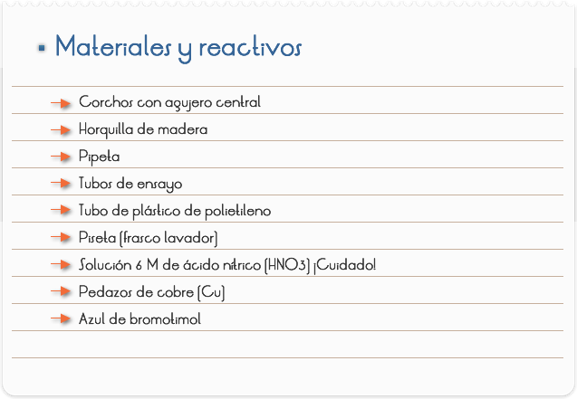
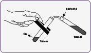
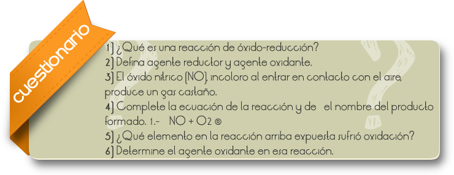
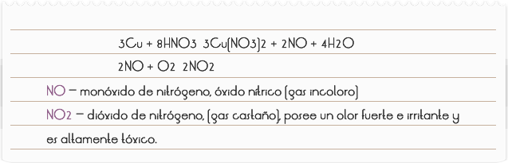

Introducción
En las reacciones de óxido-reducción la formación del producto está vinculada a una transferencia de electrones (real o aparente), entre determinados elementos químicos de las sustancias reactivas.
El elemento químico que pierde electrones sufre una oxidación y el valor de su NOX aumenta del reactivo para el producto.
El elemento químico que gana electrones sufre una reducción y el valor de su NOX disminuye del reactivo para el producto.
Cuando un elemento químico pierde electrones, hace que otro elemento gane esos electrones y viceversa. De esa forma, se puede decir que la sustancia que posee el elemento que sufre oxidación (provoca reducción) es una sustancia reductora (agente reductor). De la misma forma, la sustancia que posee el elemento químico que sufre reducción (provoca oxidación) es una sustancia oxidante (agente oxidante). El ácido nítrico (HNO3) en presencia de metales no sufre reacción de dislocación, comportándose como una fuente oxidante.
Objetivo
Estudiar una reacción de óxido-reducción.

Procedimientos
.1) Montar el esquema, (Figura 1).
2) Colocar 4,5 ml. de agua en el tubo B y agregue 4 gotas de azul de bromotimol.
3) Agitar el tubo, observar el color de la solución y cerrar el corcho que presenta una ranura. El tubo de polietileno debe quedar con la extremidad dentro de la solución (aproximadamente 2 cm.)
4) Sujetar el tubo A con la horquilla de madera, adicionar 1 ml. de ácido nítrico (HNO3) y colocar un pedazo pequeño de cobre (Cu) de aproximadamente 0,5 cm.
5) Cerrar el tubo 1 con el corcho y el tubo de polietileno, observar y anotar.

Figura 1:

RESULTADOS Y CONCLUSIONES
La reacción que ocurrió en el experimento, puede ser expresada por la ecuación:

El monóxido de nitrógeno, gas inicialmente liberado, es incoloro. Al entrar en contacto con el aire sufre oxidación formando el dióxido de nitrógeno (gas castaño). El dióxido de nitrógeno es un anhídrido mixto (óxido ácido), es decir, en contacto con el agua produce los ácidos nítrico (HNO3) y nitroso (HNO2), según la ecuación.
La solución de esos dos ácidos es inestable, sufriendo el ácido nitroso descomposición en ácido nítrico, monóxido de nitrógeno y agua, conforme la ecuación mostrada a seguir.